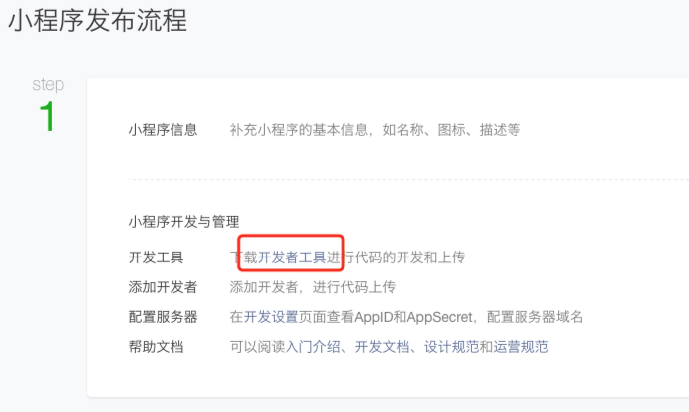
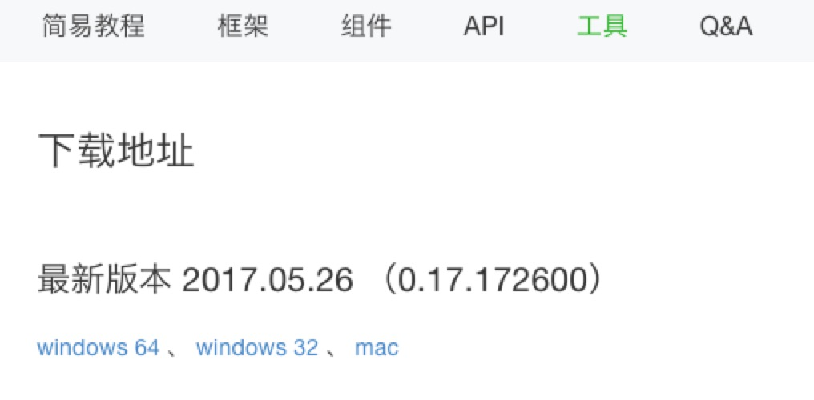
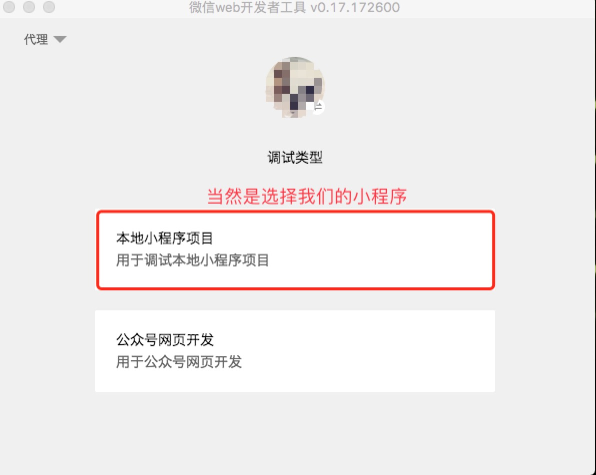
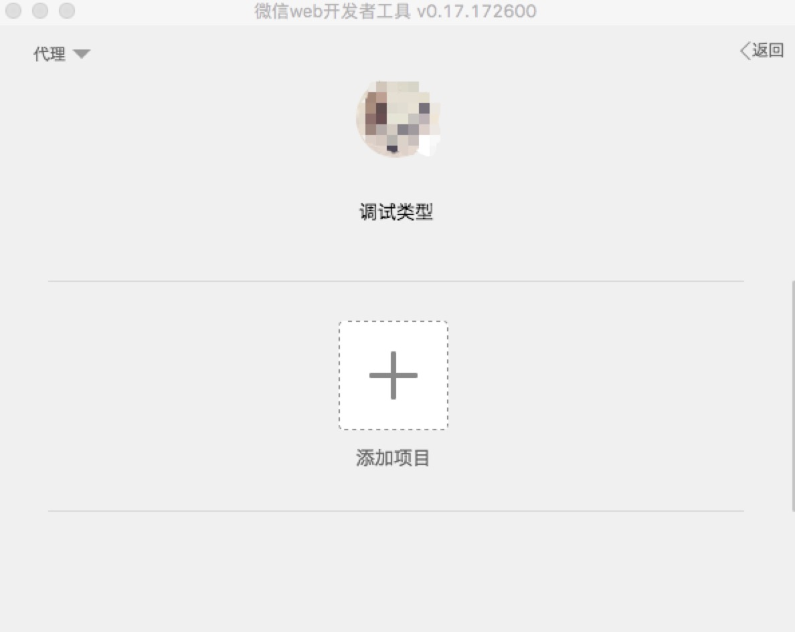

第一章：小程序初级入门教程
§ 小程序开发工具安装
在上一节第 8 步所展示的页面中，可以点击 开发者工具 直接进入到下载页面，也可以直接访问 官网下载地址。然后根据自己的设备选择相应的下载
安装过程不再复述，一路默认。

下载开发工具

§ 小程序工具起手
此教程选择的工具为 mac 平台版本，没差
1. 打开安装好的微信web开发者工具，需要用管理员或开发者的微信账号扫码登录。管理员账号是上一节第 6 步中注册appID时，绑定的微信账号。开发者账号可在上一节第 8 步中的添加开发者中设置

- 登录成功后，选择
本地小程序项目，然后添加项目


- 如果没有注册
appID，也可以开发小程序项目，但部分功能会受限，比如在手机上预览。在这里，我们已经有了appID
- 添加成功后，我们的项目会在
微信web开发者工具中自动打开并启动，可以在此工具中对代码进行修改、调试、断点、预览，文件有修改的话，项目会实时更新。